품질경영산업기사 (2016-03-06 기출문제)
1과목: 실험계획법
1. 분산분석의 결과가 표와 같을 대 오차의 기여울(ρe)은 약 얼마인가?
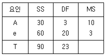
- 56.67%
- 66.67%
- 76.67%
- 86.67%
(정답률: 61%)

2. 벼의 품종을 n개 블록으로 층별한 논에 따라 수확량의 차이가 있는가를 알아보기 위하여 서로 다른 4개 볍씨를 n개 블록의 논에 랜덤하게 심어서 실험을 하고자 하는 경우 가장 적절한 실험법은?
- 난괴법
- 직교배열법
- 분할법
- 라틴방격법
(정답률: 60%)
3. 인자가 A, B인 2원배치 실험에서 교호작용을 분리하려고 반복 2회 실험을 하였다. A의 자유도가 4이고, 교호작용의 자유도가 20이면 B의 수준수는?
- 3
- 4
- 5
- 6
(정답률: 54%)
4. 실험계획의 기본원리 중 오차항의 자유도가 커져 오차의 평균제곱(Ve)의 정도가 좋게 추정됨으로써 실험결과의 신뢰성을 높일 수 있는 것은?
- 반복의 원리
- 블록화의 원리
- 교락의 원리
- 랜덤화의 원리
(정답률: 50%)
5. 반복이 없는 2원배치 실험에서 결측치가 생겼을 때 결측치를 추정하는 데 사용하는 방법은?
- 최소제곱법
- Yates의 방법
- Fisher의 방법
- Pearson의 방법
(정답률: 82%)
6. 어떤 화학반응 실험에서 농도를 4수준으로 반복수가 일정하지 않은 실험을 하여 표와 같은 데이터를 얻었다. 분산분석 결과 오차의 평균제곱 Ve=167.253이다. A4와 A2의 평균치 차를 유의수준 0.01로 검정하고자 한다. 평균치 차가 약 얼마 이상일 때 평균치 차가 있다고 할 수 있는가? (단, t0.995(15)=2.947, t0.99(15)=2.602이다.)
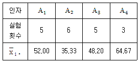
- 22.434
- 23.795
- 25.150
- 26.950
(정답률: 44%)
7. 변량인자 A로 반복수가 같은 1원 배치 실험에 대한 설명으로 맞는 것은?
- xij=μ+ai+bi+eij의 구조식을 갖는다.
- 분산분석표 작성 시 모수모형과는 작성방법이 다르다.
- 검정결과 유의하다면 산포의 정도를 알기 위한
 의 추정은 의미가 있다.
의 추정은 의미가 있다. - 검정결과 유의하다면 인자의 각 수준에서의 모평균을 추정하는 데 의미가 있다.
(정답률: 59%)
8. 인자 A의 수준수가 3인 1원 배치 실험에서 반복수가 일정하지 않은 경우, 인자 A의 제곱합(SA)을 구하는 식으로 맞는 것은? (단, 각 i 수준에서 합계는 Tiㆍ, 반복수는 ni이며, 수정항은 CT이다.)
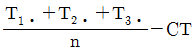
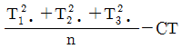
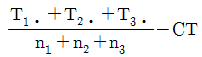
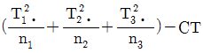
(정답률: 72%)
9. A는 4수준, B는 5수준 반복이 없는 2원 배치 실험의 분산분석 결과가 [표]와 같을 때, ㉠과 ㉡에 들어갈 값은 약 얼마인가? (단, 인자 A, B는 모두 모수인자이다.)
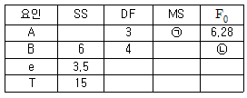
- ㉠1.23, ㉡4.35
- ㉠1.56, ㉡5.14
- ㉠1.83, ㉡3.26
- ㉠1.83, ㉡5.14
(정답률: 66%)
10. 라틴방격법에 관한 설명으로 맞는 것은?
- 일반적으로 라틴방격법 실험에서는 모수인자와 변량인자를 사용한다.
- 3인자의 실험에 적용되며, 각 인자의 수준수가 반드시 동일하지 않아도 된다.
- 수준수가 k인 라틴방격법은 3원 배치 실험보다 k2배의 실험횟수를 감소시킬 수 있다.
- 분산분석표의 F검정 결과 유의한 인자에 대해서 각 인자수준에 대하여 모평균을 추정하는 것은 의미가 있다.
(정답률: 70%)
11. 다음의 데이터는 기계 종류별로 생산된 제품들 중 각각 100개씩 샘플을 뽑아 적합품과 부적합품으로 구분한 것이다. 오차의 자유도 ve는?
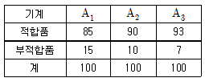
- 200
- 297
- 299
- 300
(정답률: 78%)
12. 인자 A가 4수준, 인자 B가 3수준인 반복 없는 2원 배치 실험에서 유효반복수(ne)는? (단, A, B는 모두 모수인자이며, 분산분석 후 두 인자 모두 유의하였다.)
- 2
- 3
- 4
- 5
(정답률: 64%)
13. 다음은 모수인자 A, B에 대한 반복 없는 2원 배치 실험 데이터 및 분산분석표이다. 이 실험에 관한 내용으로 틀린 것은? (단, 실험의 품질 특성은 망대특성이다.)
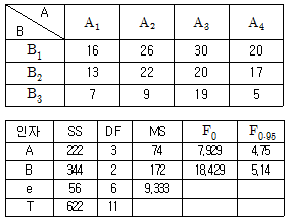
- 총 실험횟수는 12회이다.
- 인자 B의 수준수는 3이다.
- 최적해의 추정치
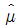
(A3B1)=28이다 - 유의수준 5%로 인자 A와 B모두 유의하다.
(정답률: 68%)
14. 2준수계 직교배열표에서 L8(27)의 경우 실험횟수는 몇 회인가?
- 2
- 3
- 7
- 8
(정답률: 66%)
15. 모수인자 A가 4수준, 변량인자 B 3수준으로, 반복 없는 2원 배치 실험을 행하였을 때 인자 A의 기대평균제곱 E(VA)는?
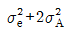
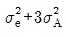
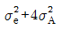
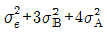
(정답률: 73%)
16. 인자 A의 수준수를 4로 하여 각 수준마다 반복 4회의 실험을 랜덤한 순서로 행한 후, 분산 분석표를 작성하여 총 제곱합(ST)=7.35, 인자 A의 제곱합(SA)=3.87을 얻었다. 오차의 제곱합(Se)의 값은?
- 2.33
- 3.45
- 3.48
- 4.23
(정답률: 52%)
17. 윤활유 정제공장에서 온도(A), 원료(B), 부원료(C)에 대하여 각각 3수준의 라틴방격 실험 한 후 Xijk=xijk-40으로 수치변환한 결과가 다음 표와 같았다. 이때 인자 A의 제곱합(SA)은?
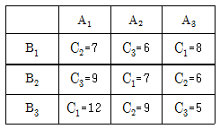
- 4.67
- 14
- 22.7
- 44
(정답률: 40%)
18. 인자 A는 3수준, 인자 B 4수준, 반복 2회의 2원 배치(모수모형) 실험을 행했을 때 수준조합 AiBj의 모평균의 추정에 관한 내용으로 맞는 것은? (단, A, B는 모수이다.)
- F0검정에서 A×B가 유의하지 않을 때 점추정은
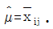
이다. - F0검정에서 A×B가 유의할 때 점추정은
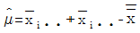
이다. - F0검정에서 A×B가 유의할 때 구간추정 시 반복수를 2회로 적용한다.
- F0검정에서 A×B가 유의하지 않을 때 구간추정 시 반복수를 3회로 적용한다.
(정답률: 58%)
19. 기본표시가 [표]와 같은 LS(27)형 직교배열표에서 요인 A, B, C, D 를 순서대로 1, 3, 5, 7열에 배치한 경우 A×C 와 별명관계에 있는 요인은?
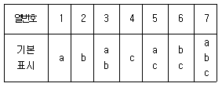
- A×B
- B×C
- B×D
- C×D
(정답률: 58%)
20. 1원배치 실험에 대한 단순회기 분산분석표가 표와 같을 때, 결정계수는 약 얼마인가?
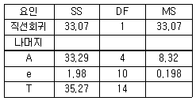
- 0.926
- 0.938
- 0.944
- 0.954
(정답률: 55%)
2과목: 통계적품질관리
21. 대응되는 두 변수 X, Y에 대한 자료가 다음과 같을 때 공분산은 약 얼마인가?
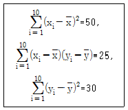
- 2.50
- 2.78
- 3.33
- 5.56
(정답률: 50%)
22. 검사특성곡선에 관한 설명으로 틀린 것은? (단, N은 로트의 크기, n은 표본의 크기, c는 합격판정 개수, N＞10n이다.)
- N, c가 일정하고, n이 증가하면 검사특성곡선의 경사가 완만해진다.
- N, n이 일정하고, c이 증가하면 검사특성곡선의 경사가 완만해진다.
- c,n이 일정하고, N이 증가하면 검사특성곡선은 크게 영향을 받지 않는다.
- N과 c를 N 에 비례하여 샘플링하면, 각 샘플링 방식에 따라 품질보증의 정도가 크게 달라진다
(정답률: 56%)
23. 관리도에서 플로트(Plot)된 점의 변동을 표현하는 식으로 맞는 것은? (단,
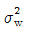
은 군내변동,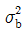
은 구간변동, n은 표본의 크기이다.)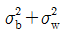
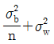
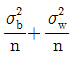
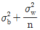
(정답률: 27%)
24. KS Q ISO 8422 : 2009 규격에서 hA=1.445, hR=1.855, g=0.1103인 100항목당 부적합수 검사를 위한 축차 샘플링 방식에서 누계 샘플 크기 중지 값은 얼마인가? (단, 대응하는 1회 샘플링 방식은 모른다.)
- 48
- 49
- 54
- 55
(정답률: 56%)
25. 다음 자료를 보고 회귀계수를 구하면 약 얼마인가?
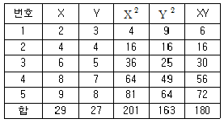
- 0.850
- 0.915
- 0.713
- 0.651
(정답률: 40%)
26.  도에서 각 군의 평균치
도에서 각 군의 평균치
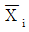
때 사용되는 n 관한 설명으로 틀린 것은?- n은 부분군의 크기를 뜻한다.
- n이 커지면 관리한계(Control Limit)가 좁아진다.
- 중심선은 n의 변화에 영향을 받지 않는다.
- n이 작을수록 치우침에 의한 이상원인을 검출하기 용이하다.
(정답률: 53%)
27. 관리도의 성능에 관한 설명 중 틀린 것은?
- 관리도의 성능은 관리도의 검출력으로 나타낼 수 있다.
- 공정의 평균에 변화가 생겼을 때
 분군의 크기 n크면 이상상태를 발견하기 쉬워진다.
분군의 크기 n크면 이상상태를 발견하기 쉬워진다. - 일반적인 3σ법 관리도에서는 제2종의 오류를 아주 작게 하도록 만들어져 있다.
 관리도에서 관리상한(UCL)은
관리도에서 관리상한(UCL)은 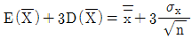
로 결정된다.
(정답률: 58%)
28. n=100의 데이터를 이용하여 히스토그램을 그리고, 규격과 대비하여 분석하고자 한다. 이때 얻어낼 수 없는 정보는?
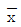
: 표본 산술평균- s : 표본 표준편차
- L(p) : 로트의 합격 확률
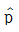
: 모부적합품률의 추정치
(정답률: 56%)
29. 공정 부적합품률이 0.10, 각 부분군의 크기(n)가 25일 때, 3σ관리한계를 이용하는 p관리도의 관리상한(UCL)과 관리하한(LCL)은?
- UCL=0.22, LCL=-0.02
- UCL=0.28, LCL=-0.08
- UCL=0.22, LCL은 고려하지 않음
- UCL=0.28, LCL은 고려하지 않음
(정답률: 62%)
30. 모분산의 검정과 추정에 대한 일반적 설명으로 틀린 것은?
- 모분산의 검정 및 추정 시 자유도는 n-2이다.
- 모분산의 신뢰구간은 좁을수록 정밀도가 높다.
- 모분산의 정밀도를 높이려면 표본수를 늘린다.
- 모분산의 검정 및 추정 시에는 X2 통계량을 활용한다.
(정답률: 59%)
31. 확률변수 X는 평균이 μ이고 분산이 σ2인 정규분포를 따른다. 이때,
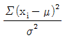
은 어떤 분포를 따르는가?- X2분포
- t분포
- 정규분포
- F분포
(정답률: 67%)
32. 전수검사와 샘플링 검사에 대한 설명으로 틀린 것은?
- 자동화의 발달로 중량, 형상 등은 전수검사가 많이 활용된다.
- 이론적으로 전수검사에서는 샘플링 오차가 발생하지 않는다.
- 인장강도시험과 같은 파괴검사의 경우 전수검사는 실시가 곤란하다.
- 표본을 랜덤하게 추출할 경우에는 샘플링검사의 결과와 전수검사의 결과가 일치하게 된다.
(정답률: 69%)
33. 검정의 결과로 “유의차가 없다”고 했을 때 이 말을 맞게 표현한 내용은?
- 유의수준 α로 대립가설이 옳다는 말이다.
- 신뢰수준 (1-α)로 대립가설이 옳다는 말이다.
- 유의수준 α로 귀무가설을 채택한다는 뜻이다.
- 유의수준 α로 귀무가설이 옳다고 하기에는 데이터가 부족하다.
(정답률: 60%)
34. c관리도와 u관리도에 대한 설명으로 틀린 것은?
- 계수형 관리도이다.
- 품질 특성의 분포는 푸아송 분포 (Poisson Distribution)를 한다.
- 검사단위가 일정한 제품의 부적합품수를 관리하기 위한 관리도이다.
- 관리한계(Control Limit)가 중심선에서 3σ 떨어진 3σ법을 주로 이용한다.
(정답률: 53%)
35. 최근 10개의 로트로부터 다음과 같은 검사기록을 얻었다. 공정평균 부적합품률은 약 얼마인가?
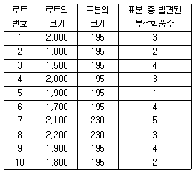
- 0.16%
- 1.53%
- 4.39%
- 10.69%
(정답률: 59%)
36. A사의 특정 공정에 대해 공정을 개선한 후 100단위당 부적합수를 조사하였더니 5개가 부적합수로 나타났다. 과거 100단위당 부적합수는 10개였다. A사의 특정 공정의 단위당 부적합수가 줄었다고 할 수 있는지 검정하고자 한다. 이때 검정 통계량은?
- -1.581
- -2.236
- -15.81
- -22.36
(정답률: 43%)
37. 학생 100명을 무작위로 추출하여 조사한 결과 80명이 현장근무를 원하였다. 현장근무의 선호율에 대한 95% 신뢰구간을 구하면 약 얼마인가?
- (0.56, 0.78)
- (0.65, 0.85)
- (0.69, 0.84)
- (0.72, 0.88)
(정답률: 58%)
38. 이항분포에서 정규분포로 근사시킬 수 있는 조건으로서 맞는 것은?
- np≥5,n(1-p)≤5
- np≥5,n(1-p)≥5
- np≤5,n(1-p)≥5
- np≤5,n(1-p)≤5
(정답률: 62%)
39. 헤드라이트를 생산하는 제조회사에서 1개월 동안 매일 상이한 개수의 표본을 수집하여 부적합품률을 조사하였다. 이 공정을 관리하는 데 적합한 관리도는?
- p관리도
- c관리도
- u관리도
- np관리도
(정답률: 55%)
40. KS Q 0001 : 2013 규격에서, 계량 규준형 1회 샘플링 검사방식 표준편차(σ) 기지일 경우, 로트의 평균치를 보증하는 경우에 G0 값은 약 얼마인가?(단, 표본의 크기 n=8, α=0.⑤, β=0.10,Kα=1.645 이다.)
- 0.548
- 0.582
- 0.693
- 0.840
(정답률: 49%)
3과목: 생산시스템
41. 작업분석 시 작업조건에 대한 개선사항으로 고려해야 될 사항 중 틀린 것은?
- 안전사고에 대비한 체계화된 구급 프로그램을 세운다.
- 귀마개를 착용하거나 소음이 적게 하는 공정개선을 실시한다.
- 해로운 먼지, 가스, 연기 등을 천천히 제거할 수 있는 방안을 마련한다.
- 햇빛이 현장에 들 수 있도록 천장이나 창문 등을 개선하고 환기를 적절하게 시킨다.
(정답률: 89%)
42. 설비보전사상의 발전과정으로 맞는 것은?
- 생산보전→사후보전→예방보전
- 사후보전→예방보전→생산보전
- 사후보전→생산보전→예방보전
- 예방보전→사후보전→생산보전
(정답률: 57%)
43. 자주보전 7스템 활동에 해당되지 않는 것은?
- 3정 5S
- 설비총점검
- 발생원 · 곤란 개산 대책
- 청소 · 점검 · 급유 가기준서 작성
(정답률: 73%)
44. ABC 분석기법에서 A급 품목은 비용이 크고, 품목수가 적기 때문에 중점관리하여 재고비용을 단축시켜야 한다. A급의 품목의 재고비용을 감소시키는 방법이 아닌 것은?
- 발주횟수를 줄인다.
- 안전재고를 줄인다.
- 조달기간을 단축한다.
- 로트의 크기를 줄인다.
(정답률: 49%)
45. 요소작업에 대한 시간을 관측하고자 할 때의 관측방법 중 비교적 긴 요소작업으로 구성된 작업측정에 가장 적합한 것은?
- 계속법
- 반복법
- 순환법
- 누적법
(정답률: 50%)
46. 한 공정에 한 사람이 작업하는 5개 공정의 작업시간이 각각 17분, 12분, 15분, 13분, 10분일 경우, 이 공정 전체의 라인밸런스 효율은 약 몇 %인가?(오류 신고가 접수된 문제입니다. 반드시 정답과 해설을 확인하시기 바랍니다.)
- 69%
- 73%
- 76%
- 79%
(정답률: 50%)
47. PERT의 각 활동에 있어서 시간추정치에 사용되는 분포는 무엇인가?
- 정규분포
- α분포
- 확률분포
- β분포
(정답률: 59%)
48. 재고 관련 비용 중 재고유지비(Holding Cost)에 해당되지 않는 것은?
- 입고비용
- 자본비용
- 보관비용
- 재고감손비
(정답률: 59%)
49. 공정분석으로 달성하고자 하는 주된 목적이 아닌 것은?
- 공정 자체의 개선
- 설비 레이아웃의 개선
- 현재 공정에 포함된 미세작업동작에 대한 개선
- 공정관리시스템의 문제점 파악과 기초자료의 제공
(정답률: 59%)
50. 작업을 완료하기까지 작업시간이 가장 짧은 것부터 우선적으로 작업을 배치하는 방법은?
- 선착선 우선규칙
- 최소작업시간규칙
- Johnson의 규칙
- 최소여유시간규칙
(정답률: 75%)
51. 설비배치의 형태 중 제품별 배치의 장점에 해당하는 것은?
- 수요의 번화, 공정순서의 변화 등에 대하여 신축성이 크다.
- 한 대의 기계가 고장이 나도 전체공정에 형향을 적게 미친다.
- 작업이 단순하여 노무비가 저렴하고 작업자의 훈련 및 감독이 용이하다.
- 다목적으로 이용되는 범용설비 및 범용장비로 자본 집약도가 낮아 비용이 적게든다.
(정답률: 73%)
52. 메모 모션 연구(Memo Motion Study)의 이점이 아닌 것은?
- 짧은 시간의 작업을 연속적으로 기록하기가 용이하다.
- 조작업 또는 사람과 기계의 연합작업을 기록하는 데 알맞다.
- 불규칙적인 사이클(Cycle)을 가진 작업을 기록하는 데 적합하다.
- 여러 가지 설비를 사용하는 작업에 대해 워크샘플링을 실시할 수 있다.
(정답률: 73%)
53. 집중구매와 비교한 분산구매의 장점을 나타낸 것으로 틀린 것은?
- 자주적 구매 가능
- 긴급수요의 경우 유리
- 가격이나 거래조건 유리
- 구매수속이 간단하여 신속한 처리 가능
(정답률: 74%)
54. 고임금 · 저노무비 실현으로 기업이윤 증대라는 경영이념을 실천하고자 한 사람은?
- H. 포드
- 찰스 바베지
- 카트 라이트
- F. W. 테일러
(정답률: 78%)
55. JIT 생산방식에서 운영하는 관리방법이 아닌 것은?
- 라인의 동기화를 추구한다.
- 소품종 대량생산방식을 추구한다.
- JIT 생산을 위해 간판방식을 적용한다.
- 조달기간을 줄이기 위해 생산준비사간을 단축한다.
(정답률: 72%)
56. R. M. Barnes 교수가 제시한 동작경제의 기본 3원칙 중 두 손의 동작은 같이 시작하고 같이 끝나도록 하여야 한다는 것은 어떤 원칙에 해당되는가?
- 인체의 사용에 관한 원칙
- 작업장 배치에 관한 원칙
- 설비의 레이아웃에 관한 원칙
- 공구 및 설비의 설계에 관한 원칙
(정답률: 90%)
57. 일정계획으로부터 생산의 합리화를 위해 고려할 사항이 아닌 것은?
- 작업의욕의 고취
- 작업기간의 단축
- 생산활동의 동기화
- 가공로트 수의 대형화
(정답률: 75%)
58. 다품종 소량생산을 하는 제조업체에 FMS 도입한 후 얻을 수 있는 이점이 아닌 것은?
- 설비가동률의 향상
- 다양한 부품의 생산 및 가공
- 대량생산으로 인한 제조비용의 감소
- 가공, 준비 및 대기시간의 최소화로 제조소요시간의 단축
(정답률: 72%)
59. A자동차회사의 최근 5년간의 판매량이 다음과 같을 때 최소자승법에 의한 2016년도 예측판매량은 몇 대인가?
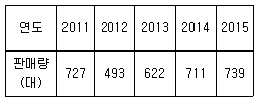
- 695
- 707
- 731
- 756
(정답률: 47%)
60. 다음 내용은 어떤 보전조직에 대한 것인가?
- 집중보전
- 부문보전
- 지역보전
- 절충보전
(정답률: 59%)
4과목: 품질경영
61. 국가적 표준의 대상이 아닌 것은?
- 신 물질의 특허 기술
- 국제규격으로 제정된 것
- 국민의 안전 및 공해방지에 필요한 것
- 수출경쟁을 위하여 품질향상이 필요한 것
(정답률: 70%)
62. 전사적 품질관리 활동의 일환으로 전원참여를 통하여 자기계발 및 상호개발을 행하고, QC수법을 활용하여 직장의 관리, 개선을 지속적으로 행하는 것은?
- 내부심사
- 품질분임조
- 공정 모니터링
- 통계적 품질관리
(정답률: 74%)
63. 일반적으로 과학기술계 표준은 크게 3가지로 구분할 수 있다. 3가지 구분에 포함되지 않는 것은?
- 측정표준
- 참조표준
- 성문표준
- 계량표준
(정답률: 50%)
64. 카노(Kano) 박사는 고객이 기대하는 품질관점에서 시장품질을 여러 가지 요소로 고찰하였다. 그 중 충족되면 만족을 주지만 충족되지 않으면 불만을 일으키는 품질요소는?
- 기본적 품질요소(Basic Quality Factors)
- 무관심 품질요소(Indifferent Quality Factors)
- 매력적 품질요소(Excitement Quality Factors)
- 일원적 품질요소(Performance Quality Factors)
(정답률: 57%)
65. 규격이 75±3.5인 품질특성에 대한 공정의 모표준편차가 1.046으로 관리되고 있다. 이 공정의 공정능력지수(Cp)를 평가하면 몇 등급인가?
- 1등급
- 2등급
- 3등급
- 4등급
(정답률: 53%)
66. 다음 중 품질보증을 하기 위한 제품기획단계에서 제일 먼저 해야 할 것은?
- 고객요구 파악
- 관련 기술의 가능성 검토
- 경쟁업체의 분석과 벤치마킹
- 신뢰성 검토 및 보장수명 결정
(정답률: 72%)
67. 품질경영시스템-기본사항과 용어(KS Q ISO 9000 : 2015) 규격에서 제품에 해당하는 것이 아닌 것은?
- 원자재
- 하드웨어
- 서비스
- 소프트웨어
(정답률: 59%)
68. 데이터를 간단히 수집할 수 있고, 계수치 데이터가 분류항목별로 어디에 집중되어 있는가를 알아보기 쉽게 나타낸 그림이나 표를 무엇이라 하는가?
- 산점도
- 히스토그램
- 체크시트
- 파레토그림
(정답률: 54%)
69. 품질경영시스템-요구사항(KS Q ISO 9001 : 2015) 규격에 명시된 품질경영원칙이 아닌 것은?
- 리더쉽
- 고객중시
- 표준화
- 프로세스 접근법
(정답률: 62%)
70. 품질특성의 평균이 36.10mm이고, 표준편차가 0.03mm였다. 이 제품의 규격상한(U)이 36.20mm일 때 공정능력지수(CpkU)는 약 얼마인가? (단, 이 제품은 규격상한만 있다.)
- 0.56
- 0.57
- 1.11
- 1.21
(정답률: 50%)
71. 표준수 및 표준수 수열 사용 지침(KS Q ISO 17 : 2012) 규격에 관한 설명으로 틀린 것은?
- 표준수는 등비수열 특성을 따른다.
- 표준수는 어떤 항이든 모두 10배 및 1/10배를 포함한다.
- 기본수열로부터 2개째씩, 3개째씩 등을 골라서 만든 수열을 유도수열이라고 한다.
- 기본수열과 비율이 다르며, 기본수열에 속하지 않는 항에서 출발한 것이 변위수열이다.
(정답률: 39%)
72. 우리나라의 시험기관, 교정기관 검사기관 및 표준물질 생산기관 등 인정업무를 수행하고 있는 조직은?
- KSA(한국표준협회)
- KOLAS(한국인정기구)
- KAS(한국제품인정제도)
- KRISS(한국표준과학연구원)
(정답률: 64%)
73. 복잡한 요인이 얽힌 문제에 대하여 그 인과관계를 명확히 함으로써 적절한 해결책을 찾는 방법으로, 각 요인의 인과관계를 논리적으로 연결하여 적절한 문제해결을 이끌어내는 데 유효한 기법은 무엇인가?
- PDPC법
- 계통도법
- 연관도법
- 매트릭스도법
(정답률: 78%)
74. 조직구성원들이 공유하고 있고 구성원 행동과 전체 조직행동에 기본 전제로 작용하는 기업교육의 가치관과 신념, 규범과 관습 그리고 행동패턴 등의 거시적 총체를 무엇이라 하는가?
- 기업목적
- 기업목표
- 기업전략
- 기업문화
(정답률: 68%)
75. QM추진팀의 역할에 해당되지 않는 것은?
- QM 교육 보급
- QM 추진에 의한 효과의 파악
- QM 추진계획의 검토 및 심의
- 경영진에 의한 QM 진단 수행 시 지적사항의 Follow-up
(정답률: 54%)
76. 3정 5S에서 3정에 해당되지 않는 것은?
- 정시
- 정품
- 정량
- 정위치
(정답률: 66%)
77. 사내표준화는 표준화의 목적, 강제력의 정도, 표준의 적용기간에 따라 분류된다. 표준화의 적용기간에 따라 분류된 것으로, 『적용 시작시기만이 명시된 표준으로 보통 대부분의 표준이 이에 속한다.』는 어떤 표준을 나타내는가?
- 시한표준
- 잠정표준
- 특별표준
- 통상표준
(정답률: 71%)
78. 제품책임의 대책으로 제품개발에서 판매 및 서비스에 이르기까지 모든 제품의 안전성을 확보하고 적정 사용방법을 보급하는 것을 무엇이라고 하는가?
- 제품기술
- 제품책임예방(PLP)
- 품질보증활동
- 제품책임방어(PLD)
(정답률: 56%)
79. 검사용 표준장비를 운반차에 싣고 각 직장을 순회하면서 검사하는 방식은?
- 집중방식
- 순회방식
- 정기방식
- 정위치방식
(정답률: 79%)
80. 품질경영이 필요한 이유에 해당되지 않는 것은?
- 전문가 중심의 기업 경영이 요구되고 있다.
- 기업들의 사회적 책임이 크게 강조되고 있다.
- 시장이 생산자 중심에서 소비자 중심으로 전환되고 있다.
- 제품/서비스 및 제조기술의 환경변화가 신속히 이루어지고 있다.
(정답률: 73%)
처리 간의 분산은 각 처리의 오차제곱합을 자유도로 나눈 값으로 계산할 수 있습니다. 예를 들어, 처리 1의 오차제곱합은 2.5이고 자유도는 2이므로 처리 1의 분산은 2.5/2 = 1.25입니다. 이와 같이 처리 2와 처리 3의 분산을 계산하여 표에 추가하면 다음과 같습니다.
| 처리 | 제곱합 | 자유도 | 분산 |
|------|--------|--------|------|
| 1 | 2.5 | 2 | 1.25 |
| 2 | 5.0 | 2 | 2.50 |
| 3 | 7.5 | 2 | 3.75 |
| 오차 | 5.0 | 9 | 0.56 |
총 제곱합은 전체 제곱합을 자유도로 나눈 값으로 계산할 수 있습니다. 전체 제곱합은 모든 자료의 제곱합에서 자료의 개수를 곱한 값에서 각 처리의 제곱합을 빼면 구할 수 있습니다. 따라서, 전체 제곱합은 (2+4+6+8+10)²/15 - (2.5+5+7.5)²/5 = 30입니다. 총 제곱합은 전체 제곱합을 자유도로 나눈 값으로 계산할 수 있으므로, 총 제곱합은 30/14 = 2.14입니다.
따라서, 오차의 기여율은 각 처리의 분산을 총 제곱합으로 나눈 후 100을 곱한 값입니다. 처리 1, 처리 2, 처리 3의 분산을 총 제곱합으로 나눈 값은 각각 1.25/2.14, 2.50/2.14, 3.75/2.14입니다. 이를 각각 계산하면 0.586, 1.168, 1.746이 나오므로, 처리 1, 처리 2, 처리 3의 오차의 기여율은 각각 0.586/100, 1.168/100, 1.746/100입니다. 따라서, 처리 1, 처리 2, 처리 3의 오차의 기여율의 합은 0.586/100 + 1.168/100 + 1.746/100 = 3.5/100 = 0.035입니다. 이를 100으로 곱하면 3.5%가 되므로, 오차의 기여율은 76.67%입니다.